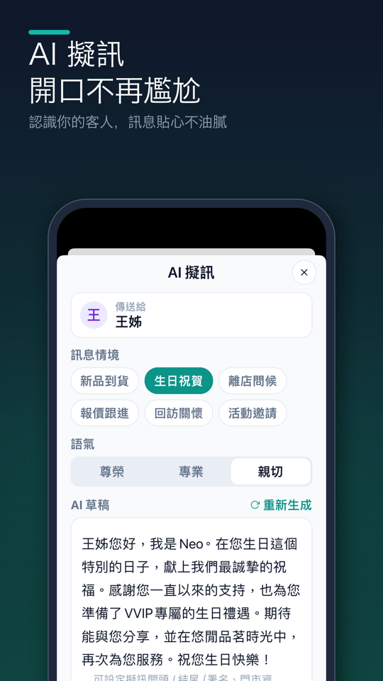

AI 擬訊教學：生日祝福、新品通知、離店感謝，一鍵寫好再傳 LINE
情境：明天是林姐生日。你想傳個祝福，但每次都卡在怎麼開頭——「親愛的貴賓生日快樂」太像罐頭，自己想又要花十分鐘。
打開林姐的客戶檔案點「AI 擬訊」，熟客簿會依她的喜好（例如喜歡祖母綠、女兒年底結婚）寫好三種寫法，挑一則改一兩個字就能傳。

操作步驟
從客人打開 AI 擬訊
在客戶檔案點上方的 AI 擬訊。也可以從提醒、看板的 需要關注、貨找人結果，或報價詳情的 AI 擬跟進訊息 進來，會自動帶入適合的情境。
選訊息情境
在 訊息情境 選 新品到貨、生日祝賀、離店問候、報價跟進、回訪關懷 或 活動邀請。選離店問候時，可以再選這次有沒有購買、是不是首次來訪。
選語氣
在 語氣 選 尊榮、專業 或 親切。
產生草稿，挑一則
第一次點 用 AI 生成，AI 會寫好三種寫法，用 1、2、3 切換；文字可以直接點進去修改。不滿意就點 重新生成，同樣的組合下次打開會直接顯示已存的草稿。
複製或傳送
點 複製 會把訊息複製起來；點 傳送 會依客人的聯絡方式打開 LINE 或 WhatsApp（打不開時改用系統分享）。複製或傳送後，熟客簿會自動記錄一次聯絡並更新聯絡時間。
小技巧
- 固定的開頭與署名：在草稿下方點 可設定擬訊開頭 / 結尾（署名、門市資訊）…點此設定，到 AI 角色與範例 填 擬訊開頭（選填）、擬訊結尾（選填），之後複製時會自動加上。
- 如果客人已經跟你的 LINE 官方帳號配對，傳送按鈕會變成 用 LINE 傳送，直接用官方帳號傳到客人的 LINE。
常見問題
- AI 寫的訊息會不會像罐頭？
- AI 會提到這位客人才有的細節，例如上次看過的款式或快到的場合，並避開制式開頭；建議再加一兩句自己的話。
- 可以修改 AI 寫的內容嗎？
- 可以，草稿文字可以直接點進去修改，再複製或傳送。
- 為什麼按傳送開的是 WhatsApp？
- 傳送會依客人的聯絡方式決定：客人只留了 WhatsApp 就開 WhatsApp，有 LINE 就開 LINE；打不開時會改用手機的分享選單。
- 三種語氣差在哪？
- 尊榮用字講究、有質感；專業清楚有禮貌；親切比較口語，像朋友聊天，可以有一兩個表情符號。
想直接試試看？
熟客簿是給第一線銷售顧問用的客戶管理 App：講 30 秒記好客人、生日回訪自動提醒、新貨到了幫你找出該通知誰。免費試用 14 天，不用綁信用卡。